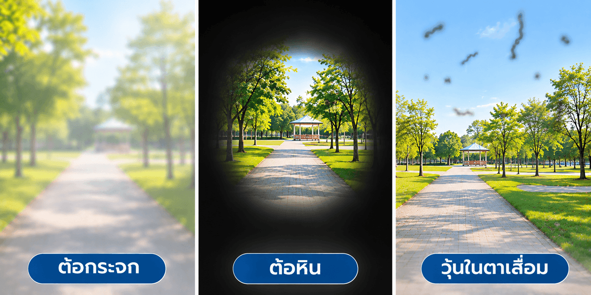

พอคนเราอายุมากขึ้น หนึ่งในสัญญาณความเสื่อมตามธรรมชาติที่พบได้บ่อย นั่นคือ ความเปลี่ยนแปลงในด้านการมองเห็น ไม่ว่าจะเป็นอาการตาฝ้าฟาง มองใกล้ไกลไม่ชัด หรือการมองเห็นจุดดำคล้ายหยากไย่ลอยไปมา ซึ่งในกรณีเช่นนี้ยังมีผู้คนจำนวนมากที่เกิดความสับสนระหว่างภาวะความผิดปกติของดวงตา 3 กลุ่มหลัก ได้แก่ ต้อกระจก ต้อหิน และวุ้นในตาเสื่อม
ในทางเวชปฏิบัติและจักษุวิทยา พบว่าผู้คนจำนวนมากยังเกิดความสับสนในการจำแนกความแตกต่างระหว่างภาวะความผิดปกติของดวงตา 3 กลุ่มหลักที่พบได้บ่อย ได้แก่ ต้อกระจก ต้อหิน และวุ้นในตาเสื่อม เนื่องจากในระยะเริ่มต้นอาการแสดงบางประการอาจมีลักษณะใกล้เคียงกัน จนทำให้ผู้ป่วยเข้าใจผิดว่าอาการที่เกิดขึ้นเป็นเพียงภาวะสายตายาวตามวัยหรือความล้าจากการใช้งานสายตาตามปกติ ส่งผลให้ละเลยการตรวจประเมินอย่างละเอียดและเข้ารับการรักษาล่าช้ากว่าที่ควรจะเป็น
แม้ทั้งสามภาวะจะมีจุดร่วมคือ การรบกวนคุณภาพการมองเห็นและมีความสัมพันธ์กับช่วงอายุที่เพิ่มขึ้น แต่ในเชิงพยาธิวิทยา ตำแหน่งโครงสร้างภายในลูกตาที่เกิดความเสื่อม กลไกการดำเนินโรค ตลอดจนระดับความรุนแรงและผลกระทบต่อการสูญเสียการมองเห็นอย่างถาวรนั้นมีความแตกต่างกันอย่างสิ้นเชิง การทำความเข้าใจถึงลักษณะเฉพาะของแต่ละภาวะอย่างรอบด้านจึงเป็นพื้นฐานสำคัญในการเฝ้าระวังความเสี่ยงและการดูแลสุขภาพดวงตาได้อย่างถูกต้องและทันท่วงที
เจาะลึกกลไกและลักษณะอาการของ 3 ภาวะความผิดปกติทางดวงตา
การจำแนกความแตกต่างของโรคตาทั้งสามกลุ่ม จำเป็นต้องพิจารณาจากตำแหน่งโครงสร้างภายในลูกตาที่เกิดการเปลี่ยนแปลงเป็นหลัก ดังนี้
ต้อกระจก (Cataract): ความขุ่นมัวของเลนส์แก้วตา
ภาวะต้อกระจกเกิดจากการเสื่อมสภาพของโปรตีนภายในเลนส์แก้วตาตามอายุที่เพิ่มขึ้น หรือจากการสะสมของภาวะเครียดออกซิเดชันจากรังสียูวี ส่งผลให้โปรตีนจับตัวกันและทำให้เลนส์ตาที่เคยใสเกิดความขุ่นมัว แสงจึงเดินทางผ่านไปยังจอประสาทตาได้น้อยลง
อาการที่พบได้บ่อย
- • ตามัวคล้ายมีหมอกบัง การมองเห็นค่อยๆ พร่ามัวลงอย่างช้าๆ โดยไม่มีอาการปวดตาหรือตาแดง
- • สีสันซีดจาง: มองเห็นสีของวัตถุผิดเพี้ยน ความสดใสลดลง หรือติดโทนสีเหลืองน้ำตาล
- • แพ้แสงจ้า: รู้สึกแสบตาเมื่ออยู่ในที่สว่างจัด และเห็นแสงไฟหน้ารถแตกกระจายเป็นแฉกในเวลากลางคืน
- • มองเห็นภาพซ้อนในตาข้างเดียว: เกิดจากการหักเหของแสงที่ไม่สม่ำเสมอผ่านเนื้อเลนส์ที่ขุ่นมัว
- • ค่าสายตาเปลี่ยนบ่อย: สายตาสั้นเพิ่มขึ้นเร็วผิดปกติในผู้สูงอายุ จนต้องเปลี่ยนแว่นตาใหม่บ่อยครั้ง
ต้อหิน (Glaucoma): ความเสื่อมของขั้วประสาทตาและลานสายตาแคบลง
ต้อหินเป็นกลุ่มโรคที่มีความเสื่อมของเส้นประสาทตา ซึ่งมักสัมพันธ์กับความดันภายในลูกตาที่สูงเกินกว่าขีดความสามารถในการทนทานของขั้วประสาทตา ส่งผลให้เส้นใยประสาทตาถูกทำลายอย่างถาวร
อาการที่พบได้บ่อย
- • ไม่แสดงอาการในระยะแรก: ในกลุ่มต้อหินมุมเปิดเรื้อรัง ผู้ป่วยจะไม่ปวดตาและยังมองเห็นภาพตรงกลางชัดเจนตามปกติ
- • ลานสายตาด้านข้างแคบลง: สูญเสียการมองเห็นรอบนอกทีละน้อย ทำให้เดินชนสิ่งของบ่อย และเห็นภาพคล้ายมองผ่านท่อในระยะท้าย
- • ปวดตาและศีรษะรุนแรง (กรณีต้อหินเฉียบพลัน): เกิดจากความดันลูกตาพุ่งสูงรวดเร็ว ร่วมกับอาการตาแดงก่ำและตามัวลงทันที
- • เห็นแสงสีรุ้งรอบดวงไฟ: เกิดจากกระจกตาบวมน้ำเมื่อความดันลูกตาสูงขึ้นเฉียบพลัน
- • คลื่นไส้และอาเจียน: เป็นอาการร่วมทางระบบประสาทอัตโนมัติที่มักเกิดพร้อมอาการ
วุ้นในตาเสื่อม (Vitreous Degeneration): การเปลี่ยนแปลงของน้ำวุ้นลูกตา
วุ้นตาเป็นสารลักษณะคล้ายเจลใสที่บรรจุอยู่ภายในช่องหลังลูกตา เมื่ออายุมากขึ้นหรือในผู้ที่มีภาวะสายตาสั้นมาก โครงสร้างคอลลาเจนภายในวุ้นตาจะหดตัวและจับตัวเป็นตะกอน หรือเกิดการแยกตัวออกจากจอประสาทตา
อาการที่พบได้บ่อย
- • เห็นจุดดำหรือเส้นหยากไย่ลอยไปมา: สังเกตเห็นจุดเล็กๆ เส้นด้าย หรือเงาคล้ายหยากไย่เคลื่อนที่ตามจังหวะการกลอกตา
- • เห็นเงาชัดเจนบนพื้นหลังสว่าง: สังเกตได้ง่ายเมื่อมองท้องฟ้า ผนังสีขาว หรือหน้าจอคอมพิวเตอร์
- • เห็นแสงวาบคล้ายฟ้าแลบ: เกิดจากวุ้นตาที่หดตัวไปดึงรั้งผิวของจอประสาทตา มักเห็นในหางตาช่วงที่อยู่ในที่มืด
- • ไม่ปวดตาและไม่เสียความคมชัดตรงกลาง: การอ่านหนังสือและการแยกแยะสีสันยังคงปกติ ยกเว้นเกิดภาวะจอประสาทตาฉีกขาดแทรกซ้อน

ตารางเปรียบเทียบความแตกต่าง: ต้อกระจก ต้อหิน และวุ้นในตาเสื่อม
เพื่อให้สามารถแยกแยะลักษณะทางคลินิกและประเมินความเสี่ยงเบื้องต้นได้อย่างเป็นระบบ สามารถพิจารณาเปรียบเทียบความแตกต่างของทั้งสามภาวะตามองค์ประกอบหลักได้ดังตารางต่อไปนี้
| หัวข้อเปรียบเทียบ | ต้อกระจก | ต้อหิน | วุ้นในตาเสื่อม |
|---|---|---|---|
| ตำแหน่งโครงสร้างที่เกิดความผิดปกติ | เลนส์แก้วตา | ขั้วประสาทตา | น้ำวุ้นลูกตา |
| กลไกพยาธิสภาพหลัก | โปรตีนในเลนส์ตาเสื่อมสภาพและจับตัวขุ่นมัว ขัดขวางการผ่านของแสง | เส้นใยประสาทตาถูกทำลายจากความดันลูกตาสูงหรือเลือดเลี้ยงไม่เพียงพอ | เส้นใยคอลลาเจนในวุ้นตาหดตัวจับเป็นตะกอน และแยกตัวจากจอประสาทตา |
| ลักษณะการมองเห็นที่เปลี่ยนแปลง | ตามัวคล้ายมีหมอกบัง ภาพไม่คมชัด สีซีดจางอมเหลือง แพ้แสงจ้า | ลานสายตาด้านข้างแคบลงเรื่อยๆ โดยภาพตรงกลางยังชัดในช่วงแรก | เห็นจุดดำหรือเส้นหยากไย่ลอยไปมาตามการกลอกตา อาจเห็นแสงวาบร่วมด้วย |
| อาการปวดตาหรือการอักเสบ | ไม่มีอาการปวดตา (ยกเว้นกรณีต้อกระจกสุกจัดจนเกิดต้อหินแทรกซ้อน) | ส่วนใหญ่ไม่ปวดในระยะแรก (ยกเว้นต้อหินเฉียบพลันที่จะปวดตาและศีรษะรุนแรง) | ไม่มีอาการปวดตาหรือตาแดง |
| แนวทางการรักษาและการพยากรณ์โรค | รักษาให้กลับมามองเห็นชัดเจนได้ด้วยการผ่าตัดสลายต้อและใส่เลนส์แก้วตาเทียม | ไม่สามารถฟื้นฟูเส้นประสาทตาที่เสียไปแล้วได้ ต้องใช้ยา เลเซอร์ หรือผ่าตัดเพื่อชะลอโรค | ส่วนใหญ่ไม่จำเป็นต้องรักษา ตะกอนจะค่อยๆ จางลงหรือชินไปเอง ยกเว้นเกิดจอตาฉีกขาด |
| กลุ่มประชากรที่มีความเสี่ยงสูง | ผู้สูงอายุ 60 ปีขึ้นไป, ผู้ที่สัมผัสรังสียูวีสะสม, ผู้ป่วยเบาหวาน, ผู้ที่ใช้ยาสเตียรอยด์ | ผู้ที่มีอายุ 40 ปีขึ้นไป, ผู้มีประวัติครอบครัวเป็นต้อหิน, ผู้ที่มีสายตาสั้นหรือยาวมาก | ผู้สูงอายุ, ผู้ที่มีภาวะสายตาสั้นมาก, ผู้ที่เคยผ่าตัดตาหรือได้รับอุบัติเหตุทางตา |
ปัจจัยเสี่ยงร่วมและพฤติกรรมในชีวิตประจำวันที่เร่งความเสื่อมของดวงตา
แม้ปัจจัยด้านพันธุกรรมและอายุที่เพิ่มขึ้นจะเป็นตัวแปรที่ไม่สามารถควบคุมได้ แต่การศึกษาทางจักษุวิทยาและระบาดวิทยาพบว่า ปัจจัยด้านสิ่งแวดล้อมและพฤติกรรมการดำเนินชีวิตมีบทบาทสำคัญในการเร่งกระบวนการเสื่อมของโครงสร้างดวงตาทั้งสามกลุ่มได้เช่นกัน
-
01
การสัมผัสรังสีอัลตราไวโอเลต (UV) สะสมเป็นเวลานาน
รังสี UVA และ UVB จากแสงแดดสามารถทะลุผ่านกระจกตาเข้าสู่เลนส์แก้วตาและจอประสาทตา ทำให้เกิดปฏิกิริยาออกซิเดชันและอนุมูลอิสระจำนวนมาก ซึ่งเป็นตัวเร่งให้โปรตีนในเลนส์ตาขุ่นมัวเร็วขึ้นและเพิ่มความเสี่ยงต่อภาวะต้อกระจกก่อนวัย
-
02
โรคประจำตัวที่เกี่ยวข้องกับเบาหวานและหลอดเลือด
ภาวะน้ำตาลในเลือดสูงในผู้ป่วยโรคเบาหวานส่งผลให้เกิดการสะสมของสารซอร์บิทอล (Sorbitol) ในเลนส์แก้วตา ทำให้เลนส์บวมน้ำและขุ่นมัวเร็วกว่าคนทั่วไป ขณะเดียวกัน ภาวะความดันโลหิตสูงและโรคหลอดเลือดหัวใจยังส่งผลกระทบต่อระบบไหลเวียนโลหิตขนาดเล็กที่ไปหล่อเลี้ยงขั้วประสาทตา ซึ่งเป็นปัจจัยเสี่ยงสำคัญของการเกิดโรคต้อหิน
-
03
การใช้ยากลุ่มคอร์ติโคสเตียรอยด์ต่อเนื่อง
การใช้ยาหยอดตา ยารับประทาน หรือยาพ่นที่มีส่วนผสมของสเตียรอยด์เป็นระยะเวลานานโดยไม่อยู่ภายใต้การดูแลของแพทย์ สามารถกระตุ้นให้เกิดต้อกระจกชนิดขุ่นที่เปลือกหลังเลนส์ และทำให้ความดันลูกตาสูงขึ้นจนนำไปสู่โรคต้อหินได้
-
04
ภาวะสายตาสั้นระดับรุนแรง
ผู้ที่มีค่าสายตาสั้นมากกว่า -6.00 ไดออปเตอร์ มักมีลักษณะโครงสร้างของกระบอกตาที่ยาวกว่าปกติ ส่งผลให้น้ำวุ้นลูกตาเกิดการยืดขยายและเสื่อมสภาพเร็วกว่าช่วงวัย นอกจากนี้ยังมีความเสี่ยงต่อภาวะจอประสาทตาบางและโรคต้อหินมุมเปิดสูงกว่าคนทั่วไป
-
05
พฤติกรรมการสูบบุหรี่และการขาดสารอาหารต้านอนุมูลอิสระ
สารพิษในควันบุหรี่เพิ่มระดับอนุมูลอิสระในกระแสเลือดและลดปริมาณสารต้านอนุมูลอิสระในเนื้อเยื่อดวงตา ทำให้เซลล์เลนส์ตาและเส้นประสาทตาเสื่อมสภาพเร็วขึ้น
ประเมินความผิดปกติเบื้องต้นและสัญญาณอันตรายที่ต้องพบแพทย์
เนื่องจากความผิดปกติของดวงตาหลายชนิดดำเนินไปอย่างช้าๆ และสมองของมนุษย์มีกลไกการปรับตัวชดเชยภาพจากดวงตาข้างที่ยังทำงานได้ดี การประเมินการมองเห็นด้วยตนเองอย่างสม่ำเสมอจึงเป็นเครื่องมือคัดกรองเบื้องต้นที่มีประสิทธิภาพ โดยมีแนวทางปฏิบัติดังนี้
การทดสอบการมองเห็นทีละข้าง
ควรทำการทดสอบเป็นประจำทุกเดือนโดยใช้ฝ่ามือปิดดวงตาทีละข้าง โดยไม่กดทับลูกตา จากนั้นมองไปยังวัตถุที่อยู่ระยะไกลและระยะใกล้ สังเกตความคมชัด ความสว่างของสี เส้นตรงของกรอบประตูหรือหน้าต่าง รวมถึงขอบเขตการมองเห็นบริเวณด้านข้าง วิธีนี้จะช่วยให้ตรวจพบความผิดปกติที่ซ่อนอยู่ในดวงตาข้างใดข้างหนึ่งได้ตั้งแต่ระยะเริ่มต้น
การเฝ้าระวังสัญญาณอันตรายฉุกเฉินทางจักษุวิทยา
หากพบอาการดังต่อไปนี้ ควรเข้ารับการตรวจประเมินจากจักษุแพทย์โดยเร่งด่วน เนื่องจากอาจเป็นสัญญาณของภาวะแทรกซ้อนที่รุนแรง เช่น จอประสาทตาฉีกขาด จอประสาทตาหลุดลอก หรือต้อหินเฉียบพลัน:
- จุดดำหรือเส้นใยที่ลอยไปมามีปริมาณเพิ่มขึ้นอย่างรวดเร็วในระยะเวลาอันสั้น (คล้ายฝนตกหรือเขม่าควันกระจายเต็มลานสายตา)
- มองเห็นแสงวาบคล้ายฟ้าแลบเกิดขึ้นซ้ำๆ และถี่ขึ้น โดยเฉพาะในที่มืด
- มองเห็นเงามืดทึบคล้ายม่านสีเทาหรือสีดำเคลื่อนเข้ามาบดบังส่วนใดส่วนหนึ่งของลานสายตา
- มีอาการปวดตาอย่างรุนแรงเฉียบพลัน ตาแดงก่ำ ตามัวลงทันที มองเห็นแสงสีรุ้งรอบดวงไฟ ร่วมกับอาการปวดศีรษะข้างเดียว คลื่นไส้ หรืออาเจียน
การตรวจสุขภาพตาเชิงป้องกันประจำปี
ผู้ที่มีอายุ 40 ปีขึ้นไป หรือผู้ที่มีปัจจัยเสี่ยงทางพันธุกรรมและโรคประจำตัว ควรเข้ารับการตรวจคัดกรองสุขภาพตาอย่างละเอียดกับจักษุแพทย์อย่างน้อยปีละ 1 ครั้ง เพื่อตรวจวัดระดับความดันภายในลูกตา ประเมินความโปร่งใสของเลนส์แก้วตา และตรวจขยายม่านตาเพื่อดูสุขภาพของขั้วประสาทตาและจอประสาทตาอย่างครบถ้วน
ดูแลสุขภาพดวงตาเชิงรุก เพื่อรักษาประสิทธิภาพการมองเห็นในระยะยาว
การทำความเข้าใจความแตกต่างระหว่างต้อกระจก ต้อหิน และวุ้นในตาเสื่อม ช่วยให้สามารถแยกแยะสัญญาณความเปลี่ยนแปลงของร่างกายได้อย่างถูกต้อง ลดความตื่นตระหนกจากการเข้าใจผิด และส่งเสริมให้เกิดการเฝ้าระวังความเสี่ยงได้อย่างตรงจุด
นอกเหนือจากการเข้ารับการตรวจสุขภาพตาตามกำหนดเวลาแล้ว การปรับเปลี่ยนพฤติกรรมในชีวิตประจำวันเพื่อลดปัจจัยกระตุ้นความเสื่อมถือเป็นหัวใจสำคัญของการดูแลดวงตาเชิงป้องกัน ไม่ว่าจะเป็นการสวมแว่นกันแดดที่สามารถป้องกันรังสี UVA และ UVB ได้ 100% เมื่อต้องทำกิจกรรมกลางแจ้ง การควบคุมระดับน้ำตาลในเลือดและความดันโลหิตให้อยู่ในเกณฑ์มาตรฐาน การพักสายตาเป็นระยะตามหลัก 20-20-20 เพื่อลดความล้าจากการใช้งานหน้าจอดิจิทัล รวมถึงการบริโภคอาหารที่อุดมด้วยสารอาหารสำคัญกลุ่มแคโรทีนอยด์ (เช่น ลูทีนและซีแซนทีน) วิตามินซี วิตามินอี และกรดไขมันโอเมก้า-3
อย่ารอให้ปัญหาการมองเห็นเริ่มส่งผลกระทบต่อชีวิตประจำวัน จึงค่อยหันมาใส่ใจสุขภาพดวงตา เพราะการดูแลตั้งแต่เนิ่น ๆ ทั้งการปรับพฤติกรรม พักสายตา และเลือกรับประทานสารอาหารที่เหมาะสม ล้วนเป็นพื้นฐานสำคัญของสุขภาพดวงตาที่ดี พร้อมเติมเต็มการดูแลด้วย Philola และ Oclarizin ผลิตภัณฑ์เสริมอาหารจากสารสกัดธรรมชาติ ที่มีสารอาหารสำคัญสำหรับสนับสนุนการทำงานตามปกติของระบบการมองเห็น
แหล่งข้อมูลอ้างอิง
American Academy of Ophthalmology (AAO): What Are Cataracts? Symptoms, Causes, Diagnosis, Treatment.
https://www.aao.org/eye-health/diseases/what-are-cataractsNational Eye Institute (NEI): Glaucoma: Symptoms, Causes, and Risk Factors.
https://www.nei.nih.gov/learn-about-eye-health/eye-conditions-and-diseases/glaucomaAmerican Society of Retina Specialists (ASRS): Posterior Vitreous Detachment (Floaters and Flashes).
https://www.asrs.org/patients/retinal-diseases/9/posterior-vitreous-detachmentWorld Health Organization (WHO): World report on vision: Eye conditions and vision impairment.
https://www.who.int/publications/i/item/9789241516570